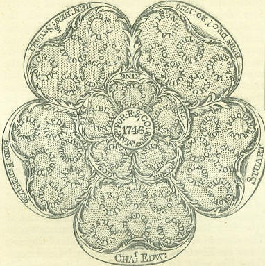
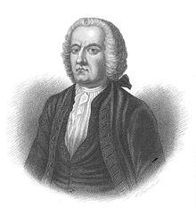
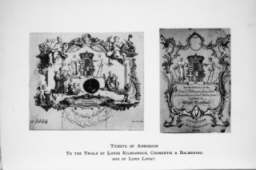

From Great Dundee
Text by Robert Burns
No Tune

"Martyrs for King and Country in 1746"(2)
Engraved plate ascribed to Robert Strange

|
1. From great
Dundee
, who smiling Victory led,
And fell a Martyr in her arms, (What breast of Northern ice but warms!) To bold Balmerino's (1) undying name, Whose soul of fire, lighted at Heaven's high flame, Deserves the proudest wreath departed heroes claim: Nor unrevenged your fate shall lie, It only lags, the fatal hour, Your blood shall, with incessant cry, Awake at last, th' unsparing Power; As from the cliff, with thundering course, The snowy ruin smokes along With doubling speed and gathering force, Till deep it, crushing, whelms the cottage in the vale; So Vengeance's arm, ensanguin'd, strong, Shall with resistless might assail, Usurping Brunswick's pride shall lay, And Stewart's wrongs and yours, with tenfold weight repay. 2. Perdition, baleful child of night! Rise and revenge the injured right Of Stewart's royal race: Lead on the unmuzzled hounds of hell, Till all the frighted echoes tell The blood-notes of the chase! Full on the quarry point their view, Full on the base usurping crew, The tools of faction, and the nation's curse! Hark how the cry grows on the wind; They leave the lagging gale behind, Their savage fury, pitiless, they pour; With murdering eyes already they devour; See Brunswick spent, a wretched prey, His life one poor despairing day, Where each avenging hour still ushers in a worse! Such havock, howling all abroad, Their utter ruin bring, The base apostates to their God, Or rebels to their King. |
1. Du grand
Dundee
, l'enfant chéri de la Victoire,
Qui mourut en ses bras comme meurt un martyr, (Ah, quel feu sous ce sein glacé l'on sent frémir!) Au fier Balmerino (1) d'impérissable gloire, A quelle âme brûlant de la celeste flamme, Revient-il de porter la plus glorieuse palme? Et la vengeance un jour viendra, Si même elle semble assoupie, Votre sang la réclame et saura, Rallumer la flamme endormie; Sur la vertigineuse roche, S'écroule la ruine enneigée Dont redoublent vitesse et force, Pour écraser enfin dans le val le chalet; Ainsi le bras de la Vengeance, Renforcé par ce sang, un beau jour détruira, De l'infâme Brunswick la superbe arrogance. Les Stuart et vous serez ainsi vengés cent fois. 2. Perdition, nocturne rapace! Vole et venge le droit bafoué Des Stuart, cette noble race: A l'infernale meute, ôte la muselière, Que tous les échos apeurés Clament leurs abois sanguinaires! Car leur proie s'étale à leurs yeux, Tous ces usurpateurs véreux, Instruments des factions et fléau de l'empire! Porté par le vent leur cri monte; La bourrasque a peine à les suivre Leur sauvage fureur broie sans pitié ni honte, Ceux que leurs yeux vengeurs à leur vindicte livre; Voyez Brunswick, la piètre proie, Dans sa vie, plus d'espoir ni joie Où chaque heure de vengeance en appelle une pire! Le sang coule dans les rigoles, C'est leur ruine qu'offrent, ma foi, Ces vils apostats aux idoles, Et ces rebelles à leur Roi. Trad. Ch.Souchon (c) 2004 |

|
(1)
Arthur Elphinstone, 6th Baron Balmerino
: 1688–1746, Scottish nobleman. He resigned a command in the English army to join the Jacobite rising of 1715, escaping after its suppression to France. He returned and took part in the 1745 rising, was captured at the battle of Culloden, and was executed with
William Boyd, Earl of Kilmarnock
, on London Hill on 18 August 1746. Two other Lords of the Scotch nobility, who had joined in the insurrection of 1745, were condemned to death. One, the Earl of
Cromarty
, was pardoned, very much out of pity for his wife and large family. A second,
Lord Lovat
, was executed in 1747.
(2) A
five-petalled (white) rose
bearing thirty-five small circles which contain each the name of a Jacobite victim of the repression at the close of the 1745-6 rising. On the extremities, those of Prince Charles and Prince Henry, his brother, with the dates of their births. Amongst the names of the sufferers: John Hamilton, governor of Carlisle for the Prince, Sir Archibald Primrose, Francis Buchanan,
Colonel Townley
, who had raised a rebel regiment at Manchester, and Captain David Morgan, a former barrister. Most of the other persons quoted were put to death on Kennington Common (Near London). The names of Lords Balmerino and Kilmarnock are not given, because the latter had professed repentance of his rebellion on the scaffold, and there would have been an awkwardness in giving the former alone.
|
(1)
Arthur Elphinstone, 6ième Baron Balmerino
: 1688–1746, Noble écossais. Il démissionna de sa charge d'officier dans l'armée anglaise pour se joindre au soulèvement Jacobite de 1715 et se réfugia en France pendant la répression. Il revint pour prendre part à la révolte de 1745. Fait prisonnier à la bataille de Culloden, il fut exécuté ainsi que
William Boyd, Comte de Kilmarnock
à la Tour de Londres, le 18 août 1746. Deux autres Lords appartenant à la noblesse écossaise, qui s'étaient joints aux insurgés de 1745, furent condamnés à mort. L'un le
Comte de Cromarty
, fut gracié, une clémence dûe à sa femme et à sa nombreuse famille. Le second,
Lord Lovat
, fut exécuté en 1747.
(2) Une
rose blanche à 5 pétales
portant 35 cercles contenant le nom d'une victime Jacobite de la répression consécutive au soulèvement de of the 1745-6. Aux extrémités, ceux du Prince Charles et du Prince Henri, son frère, ainsi que leurs dates de naissance. Parmi les victimes: John Hamilton, gouverneur de Carlisle au service du Prince, Sir Archibald Primrose, Francis Buchanan, le
Colonel Townley
, qui avait rallié son régiment aux rebelles à Manchester et le capitaine David Morgan, ancien avocat. La plupart des autres personnes citées furent mises à mort à Kennington Common (près de Londres). Les noms des Lords Balmerino et Kilmarnock ne figurent pas, ce dernier ayant, sur l'échafaud, déclaré regretter sa participation à la rebellion et il eut semblé maladroit de citer l'un sans citerl'autre.
|

Tickets of admission to the trials of Lords Lovat and Balmerino